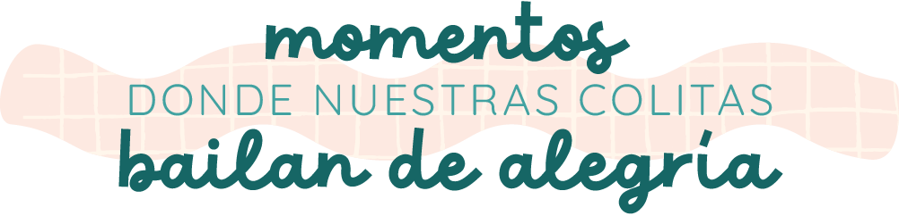
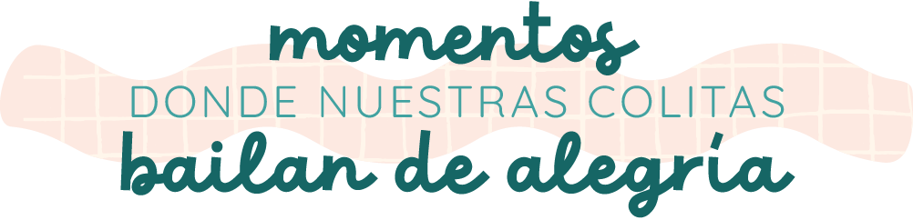

Cada basura es un tesoro de aromas fascinantes y misterios por descubrir.
Acostarme ocico arriba y ser rascado en mi barriga es inigualable, mis patas traseras se mueven involuntariamente.
Jugar me mantiene activo, permite desahogar mi energía.
Me siento completamente en sintonía con mi instinto natural de divertirme.
Cuando orino en un lugar, estoy dejando mi marca personal, me siento realizado y feliz.
Cada olor es una pista que me lleva a una nueva aventura escondida en algún rincón.
Cuando estoy emocionado, feliz, asustado o ansioso, mi ahullido es una forma decomunicarme con el mundo que me rodea.
Al final del día,
cuando me acurruco en mi camita, agradezco
por cada pequeño momento que me hace mover la
colita de alegría, recordándome que la verdadera felicidad está en las cosas simples y en el
amor incondicional que compartimos con nuestros humanos.
¡Qué maravilloso es ser un perrito y disfrutar de cada pequeño instante de la vida!
Milagro se convirtió en un miembro querido de la familia, llenando nuestros días de
alegría y compañía.
Su historia de supervivencia y resiliencia inspiró a la familia a valorar cada momento
juntos y a apreciar las pequeñas cosas de la vida.